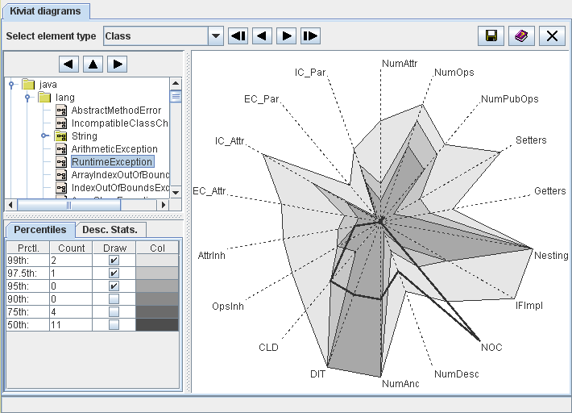

buttons or the cursor keys
to navigate through the tree.
buttons or the cursor keys
to navigate through the tree.| Prev - Next - Down | SDMetrics - the UML design measurement tool |

Figure 11: Kiviat Diagram View
Select the element to display from the tree at the top of the control
panel. You can adjust the size of the tree with the separator bars
below and to the right. Use the buttons or the cursor keys
to navigate through the tree.
The graph on the right hand side is a so-called Kiviat diagram, showing the measurement values of all metrics for the selected element. Each axis (or ray) of the graph represents one metric, as labeled in the graph. The measurement scale of each axis is the range of the metric: the minimum value is located in the center, the maximum value at the outer end. The axes are linearly scaled.
The thick line connects the measurement values of the selected element for each metric on the axes. If the element has many relatively large values, the area enclosed by the thick line will be large. So the size of the enclosed area serves as an indicator of the criticality of the element.
Note that metrics with non-numerical values, or metrics that do not vary at all, are not suitable for the graph and therefore omitted. Also, the Kiviat graph can only be shown for elements with at least three suitable metrics. If you see a "Diagram not available" message instead of a graph, there are less than three suitable metrics for the selected element type.
Below the element tree you can choose to display information about metric percentiles of the selected model element, or to display the descriptive statistics for a metric shown in the graph.
Percentiles
The percentiles table shows, for various percentiles (column "Prctl."), the number of metrics for which the measurement values exceed the percentile for the selected element (column "Count"). Assuming we mostly deal with metrics where higher values indicate lower quality, a design element should be considered critical if a larger number of metric values for the element are in the upper percentiles (e.g., 90th, 95th).
The percentiles table also controls which percentiles of the metrics are displayed in the graph. Check the boxes in the column "Draw" for the percentiles to display. This gives an indication how the measurement values of the selected element compare to all other elements. Column "Color" indicates the color for each percentile on the graph.
Descriptive Statistics
If you click near one of the axis in the Kiviat diagram, a short definition of the metric and its descriptive statistics with minimum and maximum values will be displayed on this tab.
The context menu of the graph provides links the measurement catalog (see Section 4.13 "The View 'Catalog'") and histogram (see Section 4.5 "The View 'Histograms'") for the metric of the nearest axis.
| Prev | Up | Next |
| Section 4.5 "The View 'Histograms'" | Contents | Section 4.7 "The View 'Rule Checker'" |